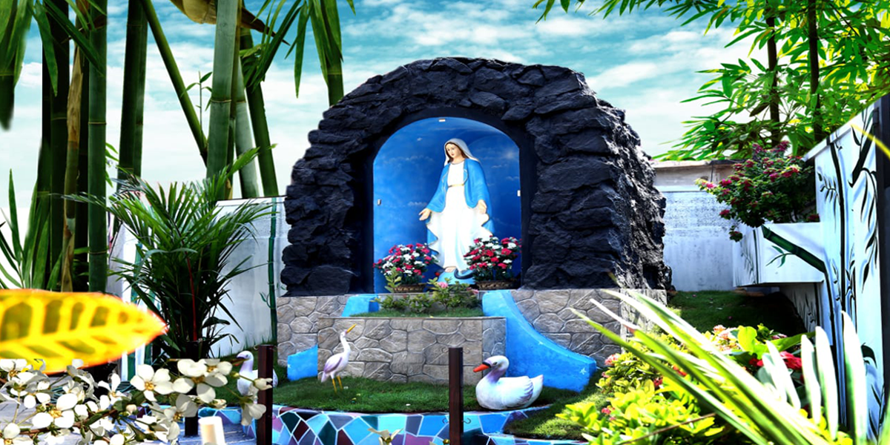

St. Mary’s English Medium School, continue its journey towards excellence, with the intercession by our Patroness Mother Mary, in the foot prints shown by our Founder, Servant of God Rev. Fr. Thomas Poothathil. Our commitment is towards our motto” With Light to the World”. Marian family in unison with the value of the school, showcases hard work, humility, and originality. With the grace of Almighty, the phenomenal record, we made in the neck to neck competition with rest of the Council’s peers in scholastic, arts and sports is the proof for excellence.